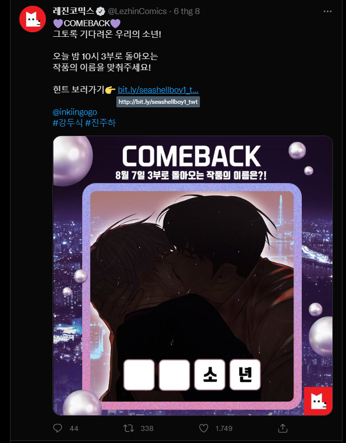

Aug: Back To School
không có lý do, chỉ là chủ nhà còn bận cày truyện rồi. Pearl Boy cụa toi đã comeback gòi TT TT, thực sự bây giờ giãy đành đạch luôn á ;;, mong kết HE nhoa >~<.
P/s: cuối cùng tôi cũng được gặp lại hai bé ròi TT. Giờ còn chờ bộ "Still Like Me?" với "Mad Dog", nhớ ghê luôn á mà tác giả thì mất tích . Ai vô hóng chung hok _-_?
P/s: Ai mà cũng như "감러" [thực ra tên chị là "ra chỗ khác chơi" á, ý là chị xa lánh mng á =)]" (tg của Eyes Clouded By The Tiger) thì tốt ㅎ-ㅎ, chị yew chăm dữ dằn a~